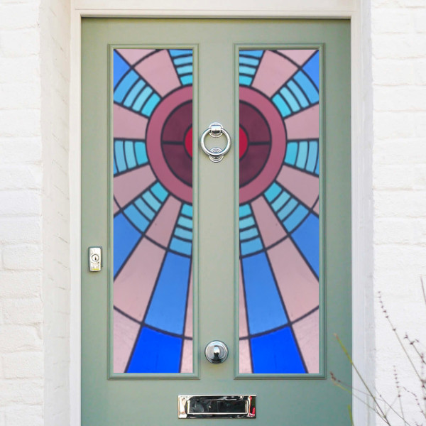

Anna Watson Glass
stained glass artist
I’ve been making stained glass art, commissions, installations and decorations for over fifteen years in tandem with my work as a theatre lighting designer.
The two processes are similar: working with light, colour and texture to create mood, focus and beauty.


I love to design and make commission pieces, working with you to establish the desired style, size and location of the final piece.

Would you like a bespoke piece of stained glass that is designed especially for your home, or the home of a relative, colleague or friend?
A beautiful window to grace the front door,
a wonderful mirror to adorn the hall,

a unique feature to enhance the garden

or a standalone piece purely for display and ornamentation.

It would be great to talk about a stained glass piece that you would like me to make for you.
If you've got an idea I can create it for you or I can bring the ideas and you can choose one.
Please get in touch or read more about commissions.
Need inspiration? Take a look through the wide variety of pieces in my design collection (some of which are available for immediate purchase) or browse my range of glass decorations (which can all be made to order).